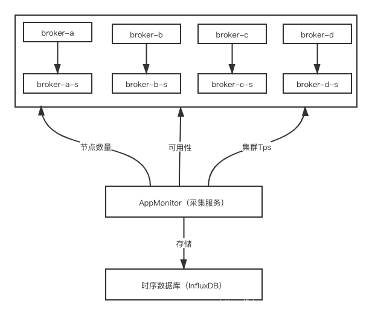

- 01 搭建学习环境准备篇.md.html
- 02 RocketMQ 核心概念扫盲篇.md.html
- 03 消息发送 API 详解与版本变迁说明.md.html
- 04 结合实际应用场景谈消息发送.md.html
- 05 消息发送核心参数与工作原理详解.md.html
- 06 消息发送常见错误与解决方案.md.html
- 07 事务消息使用及方案选型思考.md.html
- 08 消息消费 API 与版本变迁说明.md.html
- 09 DefaultMQPushConsumer 核心参数与工作原理.md.html
- 10 DefaultMQPushConsumer 使用示例与注意事项.md.html
- 11 DefaultLitePullConsumer 核心参数与实战.md.html
- 12 结合实际场景再聊 DefaultLitePullConsumer 的使用.md.html
- 13 结合实际场景顺序消费、消息过滤实战.md.html
- 14 消息消费积压问题排查实战.md.html
- 15 RocketMQ 常用命令实战.md.html
- 16 RocketMQ 集群性能摸高.md.html
- 17 RocketMQ 集群性能调优.md.html
- 18 RocketMQ 集群平滑运维.md.html
- 19 RocketMQ 集群监控（一）.md.html
- 20 RocketMQ 集群监控（二）.md.html
- 21 RocketMQ 集群告警.md.html
- 22 RocketMQ 集群踩坑记.md.html
- 23 消息轨迹、ACL 与多副本搭建.md.html
- 24 RocketMQ-Console 常用页面指标获取逻辑.md.html
- 25 RocketMQ Nameserver 背后的设计理念.md.html
- 26 Java 并发编程实战.md.html
- 27 从 RocketMQ 学基于文件的编程模式（一）.md.html
- 28 从 RocketMQ 学基于文件的编程模式（二）.md.html
- 29 从 RocketMQ 学 Netty 网络编程技巧.md.html
- 30 RocketMQ 学习方法之我见.md.html
- 捐赠
19 RocketMQ 集群监控（一）
前言
在 RocketMQ 体系中，有集群、主题、消费组，集群又包括 NameSrv 和 Broker。本篇主要介绍 RocketMQ 的集群监控设计应该考虑哪些方面，以及如何实现。下一篇文章介绍主题、消费组方面的监控。本篇的介绍基于实战中 4 主 4 从，主从异步复制的架构模式。
监控项设计
集群监控的目的记录集群健康状态，具体监控项见下图：

节点数量
如果集群中是 4 主 4 从架构，那么集群中会有 8 个 Broker 节点，下面通过 clusterList 命令可以看到有 8 个节点。当集群中节点数量小于 8 时，说明集群中有节点掉线。
$ bin/mqadmin clusterList -n x.x.x.x:9876
RocketMQLog:WARN No appenders could be found for logger (io.netty.util.internal.PlatformDependent0).
RocketMQLog:WARN Please initialize the logger system properly.
#Cluster Name #Broker Name #BID #Addr #Version #InTPS(LOAD) #OutTPS(LOAD) #PCWait(ms) #Hour #SPACE
demo_mq demo_mq_a 0 10.111.89.111:10911 V4_7_0 380.96(0,0ms) 383.16(0,0ms) 0 557.15 0.2298
demo_mq demo_mq_a 1 10.111.89.110:10915 V4_7_0 380.76(0,0ms) 0.00(0,0ms) 0 557.15 0.4734
demo_mq demo_mq_b 0 10.111.89.112:10911 V4_7_0 391.86(0,0ms) 381.66(0,0ms) 0 557.22 0.2437
demo_mq demo_mq_b 1 10.111.89.110:10925 V4_7_0 391.26(0,0ms) 0.00(0,0ms) 0 557.22 0.4734
demo_mq demo_mq_c 0 10.111.26.96:10911 V4_7_0 348.37(0,0ms) 342.77(0,0ms) 0 557.22 0.2428
demo_mq demo_mq_c 1 10.111.26.91:10925 V4_7_0 357.66(0,0ms) 0.00(0,0ms) 0 557.22 0.4852
demo_mq demo_mq_d 0 10.111.26.81:10911 V4_7_0 421.16(0,0ms) 409.86(0,0ms) 0 557.18 0.2424
demo_mq demo_mq_d 1 10.111.26.91:10915 V4_7_0 423.30(0,0ms) 0.00(0,0ms) 0 557.18 0.4852
节点可用性
检测集群中节点的是否可用也很重要，Broker 节点数量或者进程的检测不能保证节点是否可用。这个容易理解，比如 Broker 进程在，但是可能不能提供正常服务或者假死状态。我们可以通过定时向集群中各个 Broker 节点发送心跳的方式来检测。另外，记录发送的响应时间也很关键，响应时间过长，例如超过 5 秒，往往伴随着集群抖动，具体体现为客户端发送超时。
可用性心跳检测：
- 发送成功：表示该节点运行正常
- 发送失败：表示该节点运行异常
响应时间检测：
- 响应正常：响应时间在几毫秒到几十毫秒，是比较合理的范围
- 响应过长：响应时间大于 1 秒，甚至超过 5 秒，是不正常的，需要介入调查
集群写入 TPS
在前面的文章中介绍了 RocketMQ 集群的性能摸高，文章中测试场景最高为 12 万多 TPS。那我们预计承载范围 4 万~6 万，留有一定的增长空间。持续监测集群写入的 TPS，使集群保持在我们预计的承载范围。从 clusterList 命令中，可以看到每个节点的 InTPS，将各个 Master 节点求和即为集群的 TPS。
集群写入 TPS 变化率
考虑到过高的瞬时流量会使集群发生流控，那么集群写入的 TPS 变化率监控就比较重要了。我们可以在集群写入 TPS 监控数据的基础上通过时序数据库函数统计集群 TPS 在某一段时间内的变化率。
监控开发实战
本小节中会给出监控设计的架构图示和示例代码，通过采集服务采集 RocketMQ 监控指标，并将其存储在时序数据库中，例如 InfluxDB。

准备工作
\1. 定时任务调度，以 10 秒钟为例：
ScheduledExecutorService executorService = Executors.newScheduledThreadPool(1, new ThreadFactory() {
@Override
public Thread newThread(Runnable r) {
return new Thread(r, "rocketMQ metrics collector");
}
});
executorService.scheduleAtFixedRate(new Runnable() {
@Override
public void run() {
// 指标收集方法 1 collectClusterNum()
// 指标收集方法 2 collectMetric2()
}
}, 60, 10, TimeUnit.SECONDS);
\2. 获取 Broker TPS 时用到了 MQAdmin，下面是初始化代码：
public DefaultMQAdminExt getMqAdmin() throws MQClientException {
DefaultMQAdminExt defaultMQAdminExt = new DefaultMQAdminExt();
defaultMQAdminExt.setNamesrvAddr("x.x.x.x:9876");
defaultMQAdminExt.setInstanceName(Long.toString(System.currentTimeMillis()));
defaultMQAdminExt.setVipChannelEnabled(false);
defaultMQAdminExt.start();
return defaultMQAdminExt;
}
\3. 发送 Producer 启动代码：
public DefaultMQProducer getMqProducer(){
DefaultMQProducer producer = new DefaultMQProducer("rt_collect_producer");
producer.setNamesrvAddr("");
producer.setVipChannelEnabled(false);
producer.setClientIP("mq producer-client-id-1");
try {
producer.start();
} catch (MQClientException e) {
e.getErrorMessage();
}
return producer;
}
收集集群节点数量
下面代码中统计了集群中的主节点和从节点总数量，定时调用该收集方法，并将其记录在时序数据中。
public void collectClusterNum() throws Exception {
DefaultMQAdminExt mqAdmin = getMqAdmin();
ClusterInfo clusterInfo = mqAdmin.examineBrokerClusterInfo();
int brokers = 0;
Set<Map.Entry<String, BrokerData>> entries = clusterInfo.getBrokerAddrTable().entrySet();
for (Map.Entry<String, BrokerData> entry : entries) {
brokers += entry.getValue().getBrokerAddrs().entrySet().size();
}
// 将 brokers 存储到时序数据库即可
System.out.println(brokers);
}
收集节点可用性
集群中的每个 Broker 的可用性，可以通过定时发送信息到该 Broker 特定的主题来实现。例如：集群中有 broker-a、broker-b、broker-c、broker-d。那每个 broker-a 上有一个名字为“broker-a”的主题，其他节点同理。通过定时向该主题发送心跳来实现可用性。
下面两个 ClusterRtTime 和 RtTime 分别为集群和 Broker 的收集的数据填充类。
public class ClusterRtTime {
private String cluster;
private List<RtTime> times;
private long timestamp = System.currentTimeMillis();
public long getTimestamp() {
return timestamp;
}
public void setTimestamp(long timestamp) {
this.timestamp = timestamp;
}
public String getCluster() {
return cluster;
}
public void setCluster(String cluster) {
this.cluster = cluster;
}
public List<RtTime> getTimes() {
return times;
}
public void setTimes(List<RtTime> times) {
this.times = times;
}
}
public class RtTime {
private long rt;
private String brokerName;
private String status;
private int result;
public int getResult() {
return result;
}
public void setResult(int result) {
this.result = result;
}
public String getStatus() {
return status;
}
public void setStatus(String status) {
this.status = status;
}
public long getRt() {
return rt;
}
public void setRt(long rt) {
this.rt = rt;
}
public String getBrokerName() {
return brokerName;
}
public void setBrokerName(String brokerName) {
this.brokerName = brokerName;
}
}
以下方法为同步发送心跳检测实现，以 broker-a 为例，time.setRt 表示每次发送心跳的耗时，time.setResult 表示每次发送心跳的结果，成功还是失败。
public void collectRtTime() throws Exception {
DefaultMQAdminExt mqAdmin = getMqAdmin();
ClusterRtTime clusterRtTime = new ClusterRtTime();
ClusterInfo clusterInfo = null;
try {
clusterInfo = mqAdmin.examineBrokerClusterInfo();
} catch (Exception e) {
e.printStackTrace();
return;
}
clusterRtTime.setCluster("demo_mq");
List<RtTime> times = Lists.newArrayList();
for (Map.Entry<String, BrokerData> stringBrokerDataEntry : clusterInfo.getBrokerAddrTable().entrySet()) {
BrokerData brokerData = stringBrokerDataEntry.getValue();
String brokerName = brokerData.getBrokerName();
long begin = System.currentTimeMillis();
SendResult sendResult = null;
RtTime time = new RtTime();
time.setBrokerName(brokerName);
try {
byte[] TEST_MSG = "helloworld".getBytes();
sendResult = getMqProducer().send(new Message(brokerName, TEST_MSG));
long end = System.currentTimeMillis() - begin;
SendStatus sendStatus = sendResult.getSendStatus();
// 记录发送耗时情况
time.setRt(end);
// 记录发送是否成功情况
time.setStatus(sendStatus.name());
time.setResult(sendStatus.ordinal());
} catch (Exception e) {
time.setRt(-1);
time.setStatus("FAILED");
time.setResult(5);
}
times.add(time);
}
clusterRtTime.setTimes(times);
// 将 clusterRtTime 信息存储到时序数据库即可
}
收集集群 TPS
结合定时任务调度下面的收集集群 TPS 方法，将其存储到时序数据库中。如果 10 秒收集一次，那么 1 分钟可以收集 6 次集群 TPS。
public void collectClusterTps() throws Exception {
DefaultMQAdminExt mqAdmin = getMqAdmin();
ClusterInfo clusterInfo = mqAdmin.examineBrokerClusterInfo();
double totalTps = 0d;
for (Map.Entry<String, BrokerData> stringBrokerDataEntry : clusterInfo.getBrokerAddrTable().entrySet()) {
BrokerData brokerData = stringBrokerDataEntry.getValue();
// 选择 Master 节点
String brokerAddr = brokerData.getBrokerAddrs().get(MixAll.MASTER_ID);
if (StringUtils.isBlank(brokerAddr)) continue;
KVTable runtimeStatsTable = mqAdmin.fetchBrokerRuntimeStats(brokerAddr);
HashMap<String, String> runtimeStatus = runtimeStatsTable.getTable();
Double putTps = Math.ceil(Double.valueOf(runtimeStatus.get("putTps").split(" ")[0]));
totalTps = totalTps + putTps;
}
// 将 totalTps 存储到时序数据库即可
System.out.println(totalTps);
}
计算集群 TPS 的变化率
集群 TPS 的变化情况，我们可以通过时序数据库函数来实现。假设我们上面采集到的集群 TPS 写入到 InfluxDB 的 cluster_number_info 表中。下面语句表示 5 分钟内集群 Tps 的变化率。示例中 5 分钟内集群 TPS 变化了 12%，如果变化超过 50%，甚至 200%、300%，是需要我们去关注的，以免瞬时流量过高使集群发生流控，对业务造成超时影响。
写入 TPS 的变化率 = (最大值 - 最小值)/中位数
> select SPREAD(value)/MEDIAN(value) from cluster_number_info where clusterName='demo_mq' and "name"='totalTps' and "time" > now()-5m ;
name: cluster_number_info
time spread_median
---- -------------
1572941783075915928 0.12213740458015267
© 2019 - 2023 Liangliang Lee. Powered by gin and hexo-theme-book.